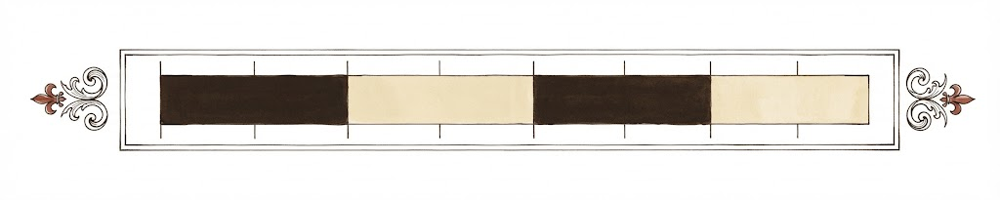
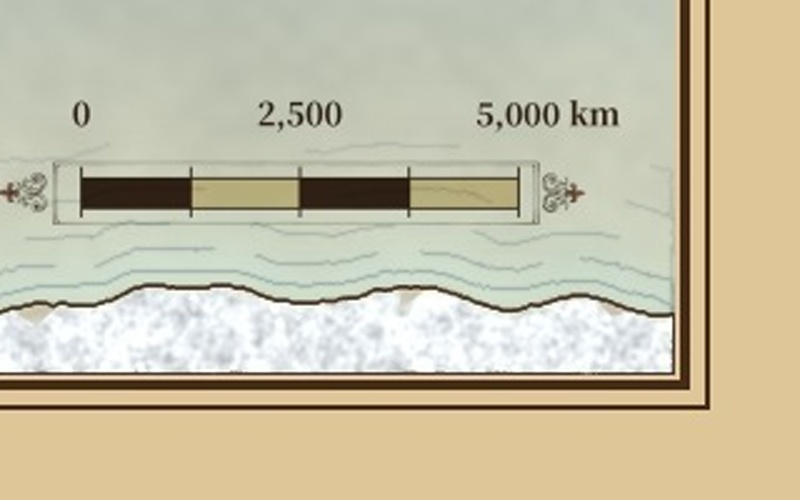
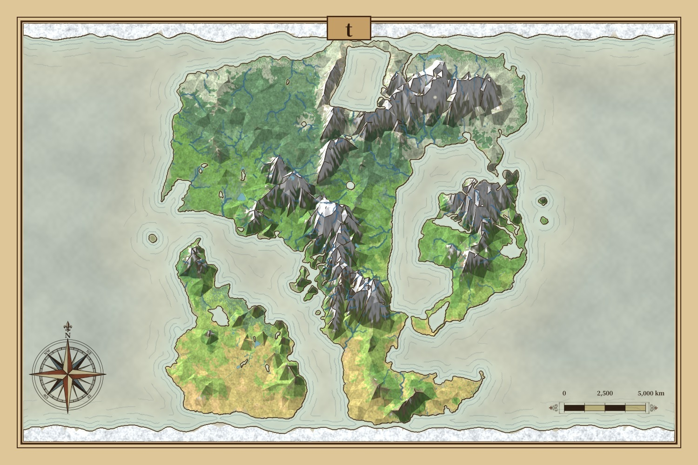
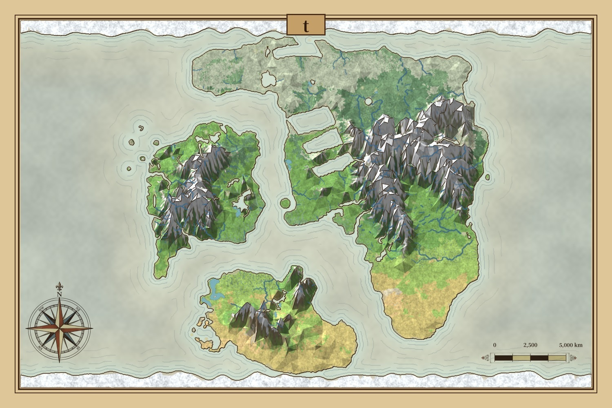
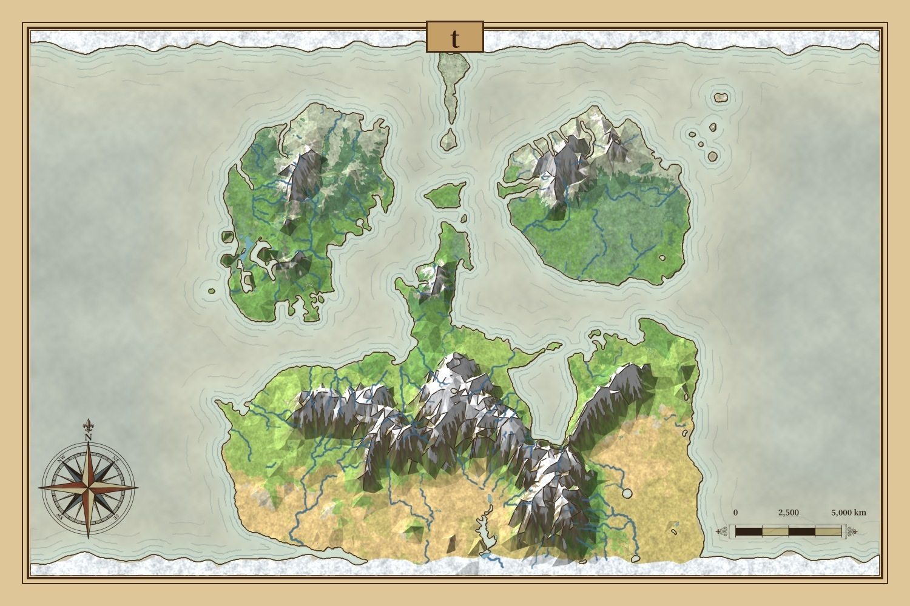
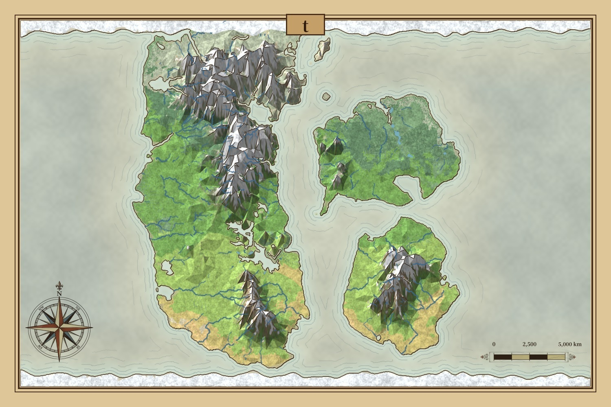
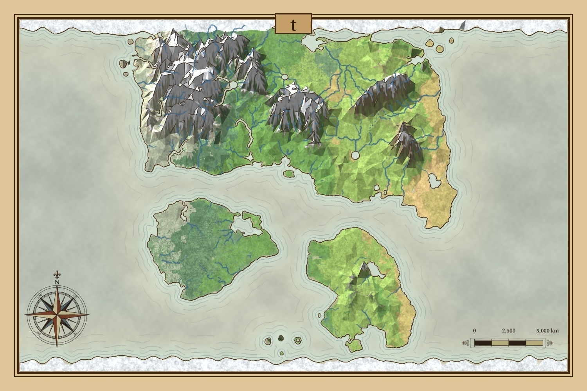

概要: 右下の海に縮尺を描きました。【確定 11-20 ユーザー決定】地図全体は地球と同じ大きさ。地球の縮尺をそのまま使う。これを、「地図の横幅(1400ピクセル)=地球一周(約4万75km)」と読み、1ピクセルは約28.6kmとしました。棒の長さは5,000km(約175ピクセル)で、2,500kmごとに数字を付けています。

絵番号 E001Geminiの絵は、棒の区間の長さが不ぞろい(約193・191・181・162)で、余分な目盛りもありました。そこで、枠と百合の飾りだけをGeminiの絵から使い、棒・目盛り・数字は自分で正確に描き直しました(4区間を等しく、5,000km=約175ピクセル)。

絵番号 E210
絵番号 E211
絵番号 E212
絵番号 E213
絵番号 E214
絵番号 E215次の一手: 「横幅=地球一周」の読みでよいか確認していただく。